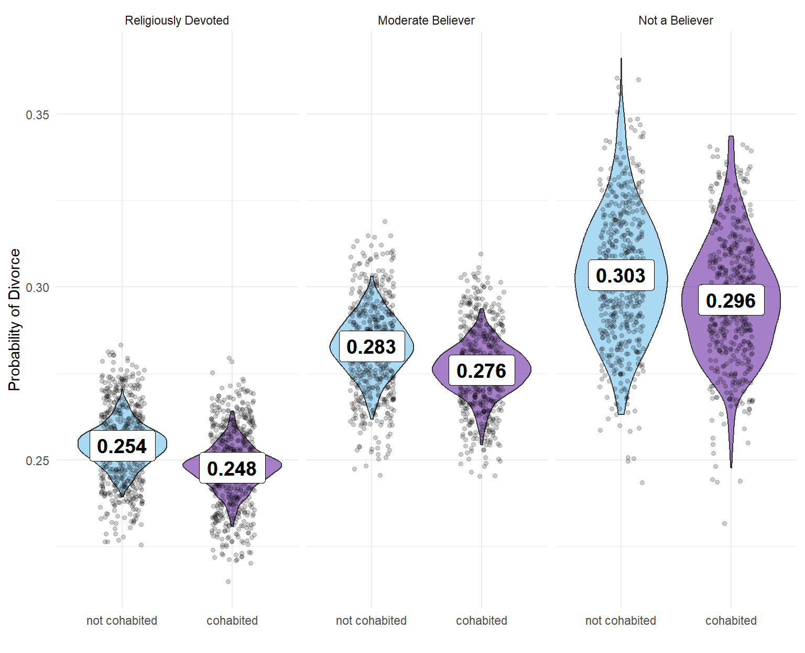

Premarital Cohabitation and Divorce Rate
In this project, I am conducting an analysis of the NSFG (National Survey of Family and Growth) database to test the hypothesis that cohabitation before marriage increases the probability of divorce. My objective is to examine the correlation between cohabitation and divorce while also exploring other factors that could potentially influence the likelihood of divorce. Additionally, I will investigate factors that may have a status of hidden correlate. For the source code, you can visit my GitHub repository: https://github.com/Niklewa/Cohab_nsfg
This document has been created within R Studio as a markdown document. The paper begins with a brief description of the data used, followed by an explanation of the analysis performed. The analysis is divided into three parts, primarily conducted in R Studio. However, the first part, which involves obtaining the data and saving it in .csv format, was completed using Jupyter Notebook due to some file extensions that do not save neatly in R data objects.
The second part, involving data cleaning and wrangling, as well as the third part, which encompasses the proper data analysis, were both done using R. In the first two parts, the data was prepared for the main analysis of the project, and therefore, they will be presented in an abbreviated version.
The third part, the proper analysis, includes the following techniques: testing conditional probabilities, visualization, conducting a chi-squared test, and building a Bayesian logistic regression model.
Data
The National Survey of Family Growth (NSFG) is a periodic questionnaire conducted in the USA to investigate social aspects of American families. The dataset I used for my analysis covered the years between 2002 and 2019. The variables of interest included marital status, cohabitation, age, religious beliefs, and socio-political opinions.
The data source for this project can be found at: https://ftp.cdc.gov/pub/Health_Statistics/NCHS/Datasets/NSFG/stata/
For data documentation, refer to: https://www.cdc.gov/nchs/nsfg/nsfg_cycle6.htm
The dataset contained over 70,000 respondents, but for my analysis focusing on variables’ influence on divorce, I chose a sample of 20,000 married individuals, which was deemed adequate.
The major challenges with this database were related to the data format, its size, and the existence of various names for the same variables. To address the data format issue, I employed a specific method to handle and organize the data effectively.
Data preparation
The data storage format on the NSFG web page presented a unique challenge. Each survey result was stored in a .dat format, but in order to utilize it, it had to be connected with the corresponding key file in the .dct format. Handling a file in the regular .dat format is not particularly difficult, but dealing with this combined .dat and .dct format presented limited satisfactory solutions.
As mentioned earlier, I opted to use Python to tackle this issue. I found the Statadict package to provide an elegant and effective solution to handle the combined .dat and .dct format, making it possible to extract and work with the data for analysis. This choice allowed me to proceed with my analysis smoothly and efficiently.
c=0
for dat,dct in zip(dat_name, dct_name):
c+=1
stata_dict = parse_stata_dict(dct)
hx = pd.read_fwf(
dat, names=stata_dict.names, colspecs=stata_dict.colspecs)\
.to_csv(r'C:\nikod\Documents\csv_files\NSFG_data_{}.csv'.format(c))
Firstly, I automated the downloading process from the NSFG web page and saved the files in two lists: dat_name and dct_name. The function mentioned above connects .dat files with their keys and saves them in separate .csv files. The entire file-naming process is also automated.
After successfully obtaining the data and saving it in .csv files, I proceeded to work in R Studio to address the next two challenges: dealing with the size of the data and handling various names of the same variables.
To manage the data effectively, I started by dividing the data files into three groups, where each group shared common variable names. These groups were then placed in separate folders. My approach was to create separate data frames for each group, unifying the variable names within each frame. However, one major challenge arose due to the relatively large number of variables, some files contained more than 1,400 variables.
To tackle this issue, I referred to the data documentation and carefully selected the variables relevant to my analysis. By specifying these variables, I was able to extract and work with only the significant variables for my project, streamlining the data analysis process.
setwd("C:/nikod/Documents/csv_files_0200_0610")
temp_1 <- list.files(pattern="*.csv")
col_function_1 <- function(x) {read.csv(file = x, sep = ",")[ ,c(
"caseid", "age_a", "marstat", "reldlife", "religion", "samesex",
"gayadopt", "lifeprt", "timesmar", "staytog", "sxok18",
"attnd14", "achieve", "lifprtnr", "cmintvw", "fmarit"
)]}
dat_list_1 <- lapply(temp_1, col_function_1)
The code above successfully returns a list of data frames with the specified variables. I repeated this process for all three initial groups. Later, I added three more groups, which were grouped by gender, to further organize the data. Dealing with different names of variables in each group was also handled effectively.
In the final step, I merged all of these data frames together to create a comprehensive and usable version of the data that aligns with my specific research interests: a version containing relevant variables from all groups combined. This merging process allowed me to have a consolidated dataset for my analysis, incorporating the necessary information from various groups and gender categories.
dat_nsfg <- full_join(dat_genders, dat_main, "caseid")
write.csv(dat_nsfg, "C:\\nikod\\Documents\\main_data\\dat_nsfg.csv",
row.names = FALSE)
Let’s have a quick look at the data frame:
| caseid | marrend | livtogn | agemarr | sex | abortion | pill | mornpill | condom | age_a | marstat | reldlife | religion | samesex | intvwyear | lifprtnr | timesmar | attnd14 | fmarit | gayadopt | lifeprt | sxok18 | staytog | prvntdiv | achieve |
|---|---|---|---|---|---|---|---|---|---|---|---|---|---|---|---|---|---|---|---|---|---|---|---|---|
| 36133 | NA | NA | NA | 1 | NA | NA | NA | NA | 23 | 6 | 2 | 3 | 1 | 2010 | 5 | NA | 3 | 5 | 1 | 5 | 2 | 2 | NA | 3 |
| 36636 | NA | NA | NA | 1 | NA | NA | NA | NA | 25 | 6 | 2 | 4 | 1 | 2010 | 5 | NA | NA | 5 | 1 | 5 | 1 | 2 | NA | 4 |
| 41125 | NA | NA | NA | 1 | NA | NA | NA | NA | 16 | 6 | NA | 1 | 1 | 2010 | 1 | NA | 6 | 5 | 1 | 1 | 1 | 2 | NA | 3 |
| 23607 | NA | NA | NA | 1 | NA | NA | NA | NA | 28 | 6 | NA | 1 | 1 | 2007 | 6 | NA | NA | 5 | 1 | 6 | 1 | 2 | NA | 4 |
| 40814 | NA | NA | NA | 1 | NA | NA | NA | NA | 25 | 2 | NA | 1 | 2 | 2010 | 10 | NA | NA | 5 | 2 | 7 | 2 | 3 | NA | 3 |
| 39362 | NA | NA | NA | 1 | NA | NA | NA | NA | 25 | 6 | 1 | 3 | 2 | 2010 | 0 | NA | NA | 5 | 2 | NA | 2 | 2 | NA | 3 |
| 21479 | NA | NA | NA | 1 | NA | NA | NA | NA | 31 | 1 | 1 | 4 | 4 | 2007 | 4 | 1 | NA | 1 | 4 | 4 | 3 | 3 | NA | 1 |
| 37633 | NA | NA | NA | 1 | NA | NA | NA | NA | 29 | 6 | 2 | 4 | 2 | 2010 | 20 | NA | NA | 5 | 1 | 7 | 2 | 2 | NA | 4 |
| 40822 | NA | NA | NA | 1 | NA | NA | NA | NA | 43 | 4 | 1 | 2 | 3 | 2010 | 5 | 1 | NA | 3 | 1 | 5 | 2 | 3 | NA | 3 |
| 23030 | 4 | 1 | NA | 1 | NA | NA | NA | NA | 29 | 5 | 1 | 4 | 4 | 2007 | 5 | 1 | NA | 4 | 4 | 5 | 2 | 3 | NA | 2 |
As you can see, there are many missing values, I will deal with them in the next part of this project.
Data analysis
The aim of the third file is to test a hypothesis that cohabitation before marriage increases the probability of divorce. Firstly i defined libraries that I will use and dealt with missing variables.
# Libraries
library(dplyr)
library(tidyr)
library(stringr)
library(purrr)
library(ggpubr)
library(ggplot2)
library(ggthemes)
library(scales)
library(kableExtra)
dat_nsfg$marrend[is.na(dat_nsfg$marrend)] <- 99
dat_nsfg$livtogn[is.na(dat_nsfg$livtogn)] <- 99
dat_nsfg$lifprtnr[is.na(dat_nsfg$lifprtnr)] <- 0
dat_nsfg$reldlife[is.na(dat_nsfg$reldlife)] <- 0
In the next step, I defined some functions that will aid in the analysis process. Utilizing the dplyr package in R, I created a data frame and specified the relevant variables by applying appropriate functions. This data frame will serve as the foundation for conducting further analysis on the dataset.
fun_cohab <- function(x){
ifelse((x == 9 | x == 8 | x == 99 ), 99, ifelse((x == 5 ), 0, 1))
}
fun_reldlife <- function(x){
ifelse((x == 8 | x == 0 ), 0, ifelse((x == 9 ), 2, x))
}
# The values are chosen according to the data documentation
dat_nsfg1 <- dat_nsfg %>%
mutate(divorced = ifelse ((fmarit == 3 | marrend == 2), 1, 0)) %>%
mutate(ever_married = ifelse ((fmarit == 5 ), 0, 1)) %>%
mutate(cohab_bef_marr = fun_cohab(livtogn)) %>%
mutate(separated = ifelse ((fmarit == 4), 1, 0)) %>%
mutate(reldlife = fun_reldlife(reldlife)) %>%
mutate(cohab_ever = ifelse ((livtogn == 1 | marstat ==2 ), 1, 0)) %>%
mutate(div_separated = ifelse((separated == 1 | divorced == 1), 1, 0)) %>%
select(caseid, sex, divorced, separated, div_separated, ever_married,
cohab_bef_marr, cohab_ever, intvwyear, age_a,
lifprtnr, religion, reldlife)
In the following step I have limited the sample to the people that are, or were married.
| caseid | sex | divorced | separated | div_separated | ever_married | cohab_bef_marr | cohab_ever | intvwyear | age_a | lifprtnr | religion | reldlife |
|---|---|---|---|---|---|---|---|---|---|---|---|---|
| 23030 | 1 | 0 | 1 | 1 | 1 | 1 | 1 | 2007 | 29 | 5 | 4 | 1 |
| 20600 | 1 | 1 | 0 | 1 | 1 | 1 | 1 | 2008 | 41 | 5 | 2 | 2 |
| 39612 | 1 | 0 | 1 | 1 | 1 | 1 | 1 | 2009 | 43 | 3 | 1 | 0 |
| 38464 | 1 | 1 | 0 | 1 | 1 | 0 | 0 | 2010 | 29 | 1 | 4 | 1 |
| 20678 | 1 | 0 | 1 | 1 | 1 | 0 | 0 | 2006 | 41 | 30 | 1 | 0 |
| 35261 | 1 | 0 | 1 | 1 | 1 | 1 | 1 | 2010 | 44 | 15 | 3 | 2 |
| 34569 | 1 | 0 | 1 | 1 | 1 | 1 | 1 | 2009 | 34 | 28 | 3 | 1 |
| 38391 | 1 | 1 | 0 | 1 | 1 | 1 | 1 | 2010 | 28 | 1 | 3 | 2 |
| 36788 | 1 | 0 | 1 | 1 | 1 | 0 | 0 | 2010 | 29 | 20 | 1 | 0 |
| 25698 | 1 | 1 | 0 | 1 | 1 | 0 | 0 | 2006 | 33 | 7 | 2 | 3 |
With the current data, we can observe the following percentages:
- \(27\%\) of people who have been
married at least once have experienced divorce at least once.
- \(35\%\) of people who have been
married at least once have gone through either divorce or
separation.
- \(56%\%\) of people who cohabited
before marriage have ended up getting divorced.
- \(58\%\) of people who experienced divorce or separation had previously cohabited.
From these percentages, it seems evident that there is a visible difference, indicating that people who cohabited before marriage are more likely to end their marriage with a divorce. However, employing a Bayesian approach will allow us to uncover dependencies that may not be readily apparent when only considering the initial probability of cohabiting. It’s important to note that the majority of people have cohabited before marriage, and this fact can significantly influence the data presented above. Therefore, a Bayesian analysis will provide a more nuanced understanding of the relationship between cohabitation and divorce.
# Bayes theorem: P(A|B) = P(A 'intersection' B) / P(B)
bayes_fun <- function(x,y,z){
(x/y)/(z/y)
}
# probability of a divorce for people that cohabited
cond_P_DC <- bayes_fun(c_div, all_rell_married, cohab) #0.266
# probability of a divorce for people that not cohabited
cond_P_DnC <- bayes_fun(nc_div, all_rell_married, no_cohab) #0.278
# probability of a divorce for atheists
cond_P_DA <- bayes_fun(divorced_atheist, all_rell_married, atheists) #0.31
# probability of a divorce for believers
cond_P_DB <- bayes_fun(divorced_believer, all_rell_married, believers) #0.26
The probability difference in favor of not cohabiting, though seems slightly odd, suggests that there may be some interesting insights to explore. However, the difference between being a believer and an atheist shows a much more significant contrast. Visual representations of these dependencies will provide a better look at the data.
To create the plots below, I utilized the ggplot2 package in R. ggplot2 is a powerful visualization tool that allows for creating informative and visually appealing plots, helping us gain deeper insights into the relationships between variables and their impact on divorce probability.

The columns in the first plot represent nominal values observed in the data. Dark and light blue bars depict the proportions of divorced individuals (considering only married people), and these proportions are represented with numerical values.
As you can see, cohabiting has a smaller impact on the probability of getting a divorce compared to being a believer. Now, let’s explore a similar plot that includes separation status alongside divorce.

In the second plot, the tendencies are similar, and there are no significant differences in the proportions. However, religion still stands out as having the most significant influence on the divorce rate. Being a believer or a devoted believer appears to reduce the chances of getting a divorce. Religion, being a fundamental belief, can serve as a foundational factor influencing other beliefs, such as attitudes towards cohabitation before marriage.
Let’s now proceed to test the possibility of a correlation between religion and cohabitation.
In this visualization, we can observe that non-believers tend to cohabit before marriage far more often than believers. Additionally, the lowest rate of cohabitation is observed among religiously devoted individuals. Let’s now reorient our analysis to compare the influence of religion and cohabitation on divorce. It appears that religion may act as a powerful confounding factor in this context.
Next, we will conduct a classical statistical test to explore this further. I will perform a chi-square test of correlation, which requires the data to be presented in the form of a contingency table. We will examine two tables, one for cohabitation and divorce, and another for atheism and divorce.
Assuming a significance level \(\alpha\) of \(0.05\) and a degree of freedom of \(1\) (automatically assumed by the program), the null hypothesis \(H_{0}\)) states that a factor \(x\) does not influence divorce, while the alternative hypothesis \(H_{1}\)) posits that there is a correlation. If the p-value is below \(0.05\), it can be used as evidence to reject the null hypothesis \(H_{0}\) and accept the alternative hypothesis \(H_{1}\). However, it’s essential to remember that the p-value only provides a premise of certain strength, and it should not be seen as an absolute conclusion. There is a significant body of literature showing that p-values can be overrated (as exemplified in the “mind-reading salmon” experiment: https://www.scientificamerican.com/article/the-mind-reading-salmon/).
## Divorced nDivorced
## cohab 3070 8482
## ncohab 2418 6285##
## Pearson's Chi-squared test with Yates' continuity correction
##
## data: mat1
## X-squared = 3.6061, df = 1, p-value = 0.05757
Theoretically p-value is in acceptable range, so \(H_{0}\) can be hold, but it is very close to \(0.5\). Therefore, the test is not very informative in this example.
## Divorced nDivorced
## believer 4411 12400
## nbeliever 1077 2367##
## Pearson's Chi-squared test with Yates' continuity correction
##
## data: mat2
## X-squared = 36.401, df = 1, p-value = 1.606e-09## p-value in a regural format: 0.00000000161
Here we observe a strong influence of the factor; the correlation between religious beliefs and divorce is very pronounced, according to this test. Consequently, we should adopt \(H_{1}\) as the true hypothesis and abandon \(H_{0}\).
The next step will be more substantial. We will construct a Bayesian statistical model to visualize the relationships that we observed in the previous visualizations and in this test. This model will provide a more comprehensive understanding of the connections between religious beliefs, cohabitation, and divorce, offering deeper insights into their interplay.
The Model
To draw meaningful and epistemically modest observations, let’s construct a Bayesian logistic regression model that will reveal the relationships between religious belief, premarital cohabitation, and divorce rate.
Firstly, using our main dataset, I constructed a dataframe with structured values that represent the following categories: Cohabitation and Divorce variables are binary, and reldlife values represent three categories as follows: 1 - religion is very important to me; 2 - it is somewhat important; 3 - it is not important.
| divorced | cohabitation | reldlife |
|---|---|---|
| 0 | 2 | 1 |
| 1 | 2 | 2 |
| 1 | 1 | 1 |
| 0 | 2 | 2 |
| 0 | 2 | 1 |
| 1 | 2 | 2 |
| 1 | 1 | 3 |
| 0 | 2 | 1 |
| 0 | 2 | 2 |
| 0 | 2 | 2 |
Then, I created logistic regression model using the rethinking package in R. Priors are created as very non informative on purpose, to allow the data to draw the shape of those relations between variables.
library(rethinking)
divorced_cohabRel_model <- ulam(
alist(
divorced ~ dbinom( 1 , p ) ,
logit(p) <- a + b[cohabitation] + c[reldlife],
a ~ dnorm( 0, 1),
b[cohabitation] ~ dnorm( 0 , .5 ),
c[reldlife] ~ dnorm( 0 , .5 )
) , data=df_cohab, log_lik = TRUE )
The results of this model is visualized in the following plot.

In this visualization, you can see several violin plots, each representing the probability of divorce given a certain configuration of categories, namely religious belief and whether a person cohabited premaritally. The points on the plots represent observations simulated by the model, which learned from the priors and the data. The values in the boxes represent the means of those distributions. It is a good example of how a mean may not provide sufficient information. By utilizing the entire distribution as evidence for our analysis, we can gain a more comprehensive view of the relationships.
The influence of a person’s religious beliefs has a far greater impact on the probability of divorce than the fact that they cohabited before marriage. If we wish to compare the effects of cohabitation, one can argue that cohabiting is slightly less risky than not cohabiting for all categories. However, the difference is very small, leading us to conclude that cohabitation has little to no significant effect on the probability of divorce, especially in comparison to other factors.
Additionally, it appears that religious beliefs have a considerable influence on the probability of cohabitation. Thus, we can propose a hypothesis that there might be a hidden correlate.
To facilitate our analysis, let’s consider the graph of relations between the variables, known as the Directed Acyclic Graph (DAG). This graph exemplifies the direction of the alleged causal relations between the variables: C - cohabitation; R - religious belief; D - divorce. Religious beliefs play the role of a confounder, as they appear to influence both cohabitation and divorce rates.
Conlusions
In this work, I analyzed the relationship between premarital cohabitation and divorce, aiming to test if cohabitation truly increases the probability of divorce. As it turns out, that assumption is not true.
Initially, the visualizations showed little or no influence of cohabitation on divorce. However, interestingly, religious beliefs did make a difference.
This was confirmed by the chi-squared test, where religion seemed to have a far stronger influence on the divorce rate than cohabitation. Given the unclear relation among these three variables, I constructed a Bayesian logistic regression model to delve deeper into the analysis.
The model revealed that religious beliefs act as a confounder, as depicted in the DAG above. The violin plots, representing simulations made by the model, demonstrated that cohabitation has the opposite relationship than what was initially hypothesized. Nonetheless, the degree of that influence is very small, making it inconclusive.
What is truly conclusive and the most intriguing finding of this analysis is that religious people, especially the devoted ones, have a significantly smaller probability of getting a divorce. On the other hand, non-believers showed a wider spread of values in this regard.